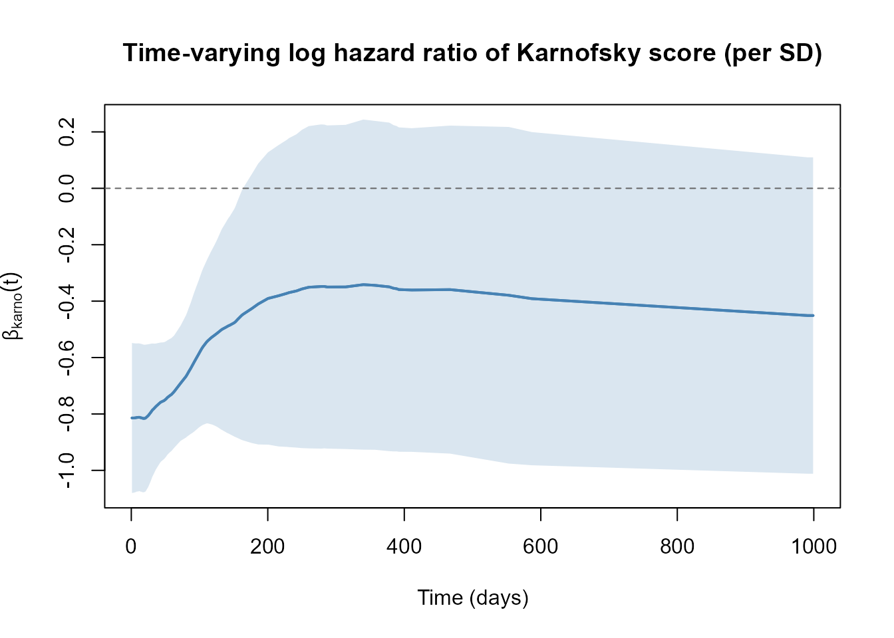
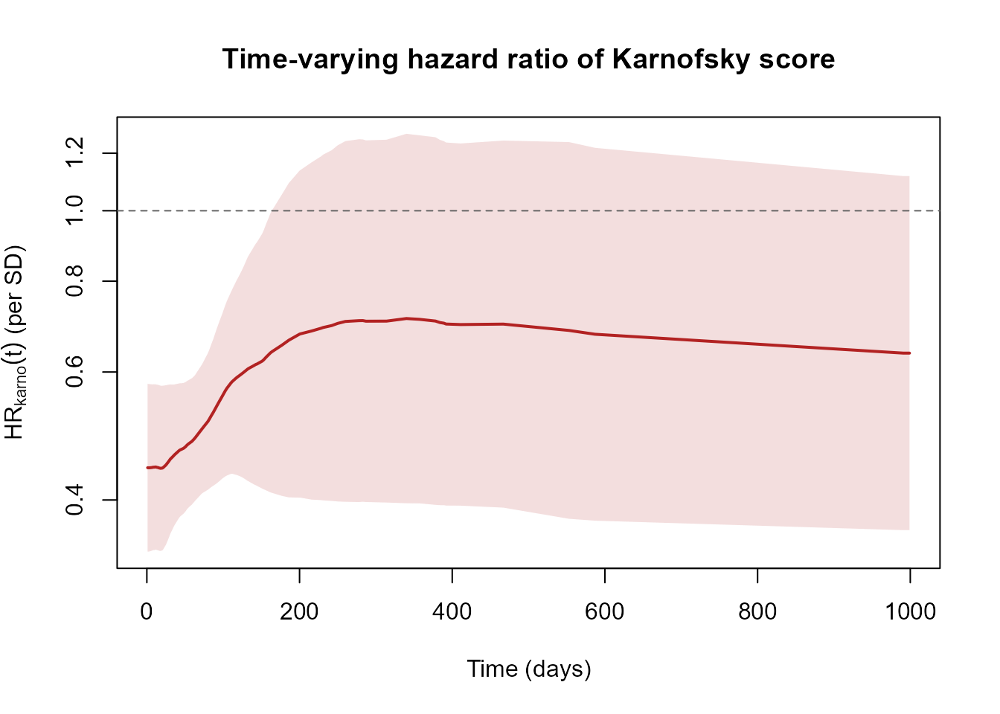
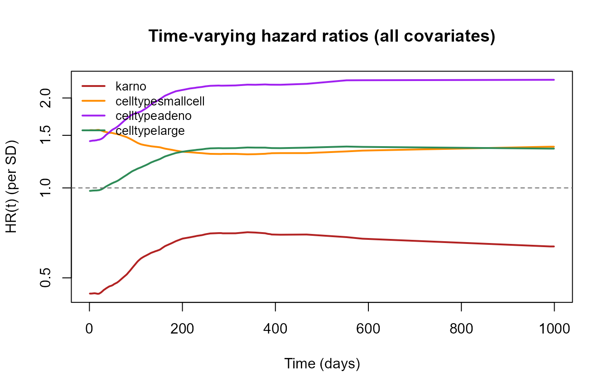
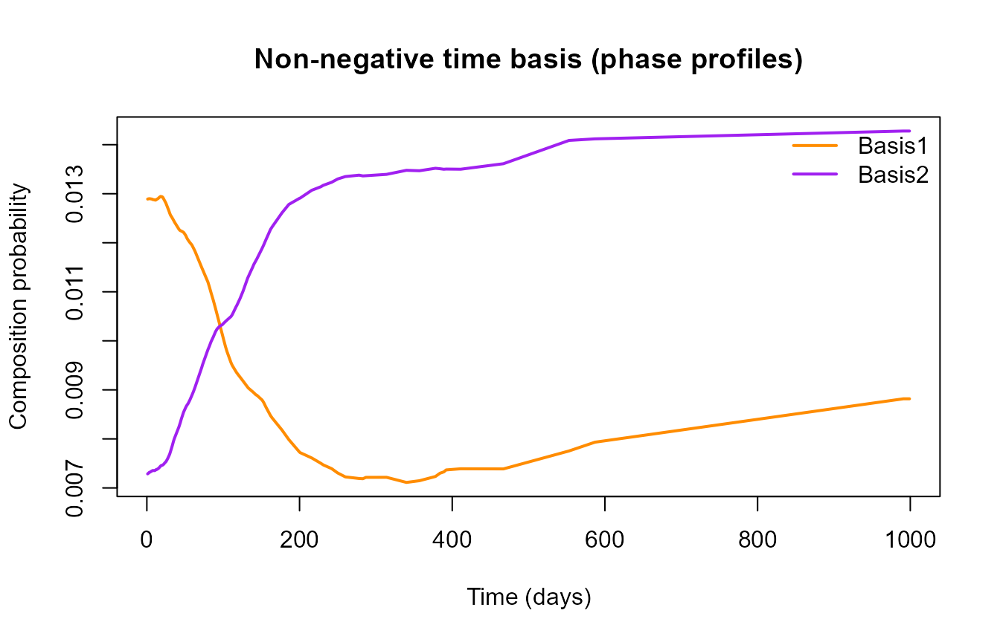

NMF-COX: Interpretable Non-Proportional Hazards with nmfkc
Source:vignettes/nmf-cox-with-nmfkc.Rmd
nmf-cox-with-nmfkc.RmdIntroduction
The Cox proportional-hazards model assumes that each covariate acts with a time-constant log hazard ratio. When that assumption fails — the effect of a covariate strengthens or fades over follow-up — the usual coefficient is hard to interpret. NMF-COX models the non-proportional part explicitly with a low-rank, non-negative time-varying offset and keeps a clean, time-constant effect for the covariates of interest.
The hazard is \[\lambda_n(t) = h_0(t)\exp\!\big(\boldsymbol z_n^\top\gamma + \boldsymbol a_n^\top\beta(t)\big), \qquad \beta(t) = C^\top \boldsymbol x(t),\quad \boldsymbol x(t) \ge 0.\]
- \(\boldsymbol z\) are the proportional-hazards covariates of interest; their effect \(\gamma\) is time-constant and is the estimand.
- \(\boldsymbol a\) are the non-proportional covariates; they receive a time-varying coefficient \(\beta(t)\).
- \(X\) (\(P\times Q\)) is a non-negative time basis over the \(P\) event times (columns normalised to sum to one, i.e. composition profiles), and \(C\) (\(Q\times R\); \(\Theta\) in the paper) is a sign-free parameter matrix — the combination is a semi-NMF representation, estimated directly on the Cox partial likelihood (Breslow ties).
Because the offset is linear in \(\boldsymbol a\) at each event time, \(\gamma\) is separated from the time-varying part and can be estimated by a cross-fit (Neyman-orthogonal) procedure. The non-negative, sum-to-one basis makes each \(\beta_r(t)\) readable as a time-phase profile, unlike a sign-free reduced-rank fit whose components oscillate and are hard to interpret.
Following the rest of the package, nmf.cox() performs
optimization only; nmf.cox.inference()
adds standard errors and tests (mirroring the nmfkc() /
nmfkc.inference() split).
1. Data: the veteran lung-cancer trial
We use the veteran data from the survival
package (137 patients, 128 deaths). We treat treatment
(trt) and age as the covariates of interest
\(\boldsymbol z\), and the Karnofsky
performance score (karno) and cell type
(celltype) as the potentially non-proportional covariates
\(\boldsymbol a\) — Karnofsky score is
the classic textbook example of a fading effect.
library(nmfkc)
library(survival)
#> Warning: package 'survival' was built under R version 4.4.3
data(veteran)
#> Warning in data(veteran): data set 'veteran' not found
veteran$y <- Surv(veteran$time, veteran$status)2. Fitting the model (optimization only)
A accepts a one-sided formula for the non-proportional
covariates. We use a rank-2 time basis and a roughness penalty
X.L2.smooth on \(\beta(t)\) (chosen in Section 5).
fit <- nmf.cox(y ~ trt + age, data = veteran, A = ~ karno + celltype,
rank = 2, X.L2.smooth = 1000, verbose = FALSE)
fit
#> NMF-COX: Cox model with a low-rank non-negative time-varying offset
#> Cox: N=137, events=128, P=97, Q=2, R=4
#> rank=2, X.L2.smooth=1000, X.restriction=colSums, solver=newton
#> Convergence: 6 / 50 (converged) epsilon = 0.0001
#>
#> Proportional-hazards coefficients (gamma), net of the time-varying effect of a:
#> coef exp(coef) se(coef) robust se z Pr(>|z|)
#> trt 0.2197 1.2457 0.1861 0.1937 1.1342 0.2567
#> age -0.0099 0.9901 0.0090 0.0099 -1.0039 0.3154
#>
#> (run nmf.cox.inference() for SEs of beta(t), the C coefficients table and Wald tests)The printed proportional-hazards coefficients \(\gamma\) (for trt,
age) come from a Cox fit that carries the estimated
time-varying offset for karno/celltype. The
object follows the house style:
fit$dims
#> [1] "Cox: N=137, events=128, P=97, Q=2, R=4"
round(fit$gamma, 4) # gamma: time-constant effects of z (trt, age)
#> trt age
#> 0.2197 -0.0099
dim(fit$C) # C (= Theta): Q x R sign-free parameter matrix
#> [1] 2 43. Inference: nmf.cox.inference()
To obtain standard errors of \(\beta(t)\), the coefficients table for
\(C\), and the Wald tests, pass the fit
and the same model specification to nmf.cox.inference(). It
returns the object with the inference fields added, so
summary() now prints the full report.
fit <- nmf.cox.inference(fit, y ~ trt + age, data = veteran, A = ~ karno + celltype)
summary(fit)
#>
#> Call:
#> nmf.cox(formula = y ~ trt + age, data = veteran, A = ~karno +
#> celltype, rank = 2, X.L2.smooth = 1000, verbose = FALSE)
#>
#> Dimensions: Cox: N=137, events=128, P=97, Q=2, R=4
#> Settings: rank=2, X.L2.smooth=1000, X.restriction=colSums, solver=newton
#> Convergence: 6 / 50 (converged) epsilon = 0.0001
#> Objective: 468.0738, runtime=0.7 sec
#>
#> Proportional-hazards coefficients (gamma):
#> coef exp(coef) se(coef) robust se z Pr(>|z|)
#> trt 0.2197 1.2457 0.1861 0.1937 1.1342 0.2567
#> age -0.0099 0.9901 0.0090 0.0099 -1.0039 0.3154
#>
#> Coefficients C (conditional on the estimated basis X):
#> Basis Covariate Estimate SE z_value p_value sig
#> Basis1 karno -103.7731 27.5881 -3.76 0.000169 ***
#> Basis1 celltypesmallcell 6.4426 28.5081 0.23 0.821208
#> Basis1 celltypeadeno -59.8300 29.4203 -2.03 0.041989 *
#> Basis1 celltypelarge -52.0547 27.1845 -1.91 0.055509 .
#> Basis2 karno 51.1549 35.5338 1.44 0.149978
#> Basis2 celltypesmallcell 30.2272 32.3060 0.94 0.349452
#> Basis2 celltypeadeno 124.1666 33.1369 3.75 0.000179 ***
#> Basis2 celltypelarge 63.2848 25.3907 2.49 0.012687 *
#> ---
#> Signif. codes: 0 '***' 0.001 '**' 0.01 '*' 0.05 '.' 0.1 ' ' 1
#>
#> Wald test H0: beta_r(t)=0 (given basis X):
#> covariate df chisq p.value
#> karno 2 61.812 <1e-04
#> celltypesmallcell 2 8.434 0.0147
#> celltypeadeno 2 32.068 <1e-04
#> celltypelarge 2 7.116 0.0285The Wald test is of \(H_0:\beta_r(t)=0\) for each
non-proportional covariate, conditional on the estimated basis
\(\hat X\): a significant result means
the covariate has a genuinely time-varying effect. Here the Karnofsky
score has a strong non-proportional effect. The coefficients
table for \(C\) uses the
house-style Basis / Covariate columns:
head(fit$coefficients, 6)
#> Basis Covariate Estimate SE z_value p_value
#> 1 Basis1 karno -103.77311 27.58813 -3.7615129 0.0001688887
#> 2 Basis1 celltypesmallcell 6.44258 28.50807 0.2259914 0.8212081088
#> 3 Basis1 celltypeadeno -59.83002 29.42034 -2.0336276 0.0419891541
#> 4 Basis1 celltypelarge -52.05468 27.18446 -1.9148686 0.0555092593
#> 5 Basis2 karno 51.15486 35.53384 1.4396094 0.1499779311
#> 6 Basis2 celltypesmallcell 30.22720 32.30603 0.9356520 0.3494523930For inference that also accounts for having selected the basis on the data, use the cross-fitted tests in Sections 6–7.
4. Reading the time-varying effect \(\beta(t)\)
fitted() returns \(\beta(t) =
XC\) at the event times (rows are event times, columns are
covariates), with pointwise standard errors in
fit$se.beta.t.
et <- fit$event.times
B <- fitted(fit) # beta(t): P x R
SE <- fit$se.beta.t
cov <- "karno"
est <- B[, cov]; lo <- est - 1.96 * SE[, cov]; hi <- est + 1.96 * SE[, cov]
plot(et, est, type = "l", lwd = 2, col = "steelblue",
ylim = range(lo, hi, 0),
xlab = "Time (days)", ylab = expression(beta[karno](t)),
main = "Time-varying log hazard ratio of Karnofsky score (per SD)")
polygon(c(et, rev(et)), c(lo, rev(hi)),
col = adjustcolor("steelblue", 0.2), border = NA)
lines(et, est, lwd = 2, col = "steelblue")
abline(h = 0, lty = 2, col = "grey40")
The Karnofsky effect is strongly protective (negative log hazard ratio) early and attenuates over follow-up — the textbook non-proportional pattern that a single Cox coefficient would average away.
Hazard ratio on the natural scale
The more interpretable version exponentiates the coefficient: \(\mathrm{HR}_r(t) = \exp\{\beta_r(t)\}\) is the hazard ratio for a one-SD increase in covariate \(r\) at time \(t\), with reference \(\mathrm{HR}=1\) (no effect). We plot it on a log scale (so \(\mathrm{HR}\) and \(1/\mathrm{HR}\) are symmetric) with a 95% confidence band \(\exp\{\beta_r(t)\pm1.96\,\mathrm{SE}\}\).
hr <- exp(est); hlo <- exp(lo); hhi <- exp(hi)
plot(et, hr, type = "n", log = "y", ylim = range(hlo, hhi, 1),
xlab = "Time (days)", ylab = expression(HR[karno](t)~"(per SD)"),
main = "Time-varying hazard ratio of Karnofsky score")
polygon(c(et, rev(et)), c(hlo, rev(hhi)),
col = adjustcolor("firebrick", 0.15), border = NA)
lines(et, hr, lwd = 2, col = "firebrick")
abline(h = 1, lty = 2, col = "grey40")
On this scale a one-SD higher Karnofsky score multiplies the hazard by about \(\exp(-0.81)\approx 0.44\) early on, rising to roughly \(\exp(-0.45)\approx 0.64\) late in follow-up: a strong early protective effect that fades but does not reverse.
We can overlay all non-proportional covariates to see which ones deviate from \(\mathrm{HR}=1\) and how their effects evolve:
HRall <- exp(B)
cols <- c("firebrick", "darkorange", "purple", "seagreen")
matplot(et, HRall, type = "l", lwd = 2, lty = 1, log = "y", col = cols,
ylim = range(HRall, 1),
xlab = "Time (days)", ylab = "HR(t) (per SD)",
main = "Time-varying hazard ratios (all covariates)")
abline(h = 1, lty = 2, col = "grey40")
legend("topleft", colnames(B), col = cols, lwd = 2, bty = "n", cex = 0.85)
The non-negative basis itself is directly interpretable as time-phase
profiles (each column of X.prob sums to one over event
times):
matplot(et, fit$X.prob, type = "l", lwd = 2, lty = 1,
col = c("darkorange", "purple"),
xlab = "Time (days)", ylab = "Composition probability",
main = "Non-negative time basis (phase profiles)")
legend("topright", colnames(fit$X.prob), col = c("darkorange", "purple"),
lwd = 2, bty = "n")
5. Choosing the rank and smoothing: nmf.cox.cv()
nmf.cox.cv() sweeps vectors of rank and
X.L2.smooth, by the cross-validated partial likelihood
(CVPL) or a partial-likelihood AIC/BIC. It returns
rank.best / X.L2.smooth.best (and, for CVPL,
the parsimonious 1-SE variants). The AIC criterion needs a single fit
per grid point and is a fast proxy.
cv <- nmf.cox.cv(y ~ trt + age, data = veteran, A = ~ karno + celltype,
rank = 2, X.L2.smooth = c(100, 300, 1000, 3000),
criterion = "aic", verbose = FALSE)
cv$X.L2.smooth.best
#> [1] 300
round(cv$aic, 1)
#> smooth
#> rank 100 300 1000 3000
#> 2 955.4 952.2 952.2 956.56. The estimand \(\gamma\):
cross-fit inference with nmf.cox.cf()
The clean, time-constant effect of the covariates of interest is estimated by a two-stage cross-fit: for each fold the time-varying nuisance \(\beta^{(-k)}(t)\) is learned without that fold, its out-of-fold offset is frozen, and \(\gamma\) is estimated on the full sample with cluster-robust standard errors.
cf <- nmf.cox.cf(y ~ trt + age, data = veteran, A = ~ karno + celltype,
rank = 2, X.L2.smooth = 1000, nfolds = 5, seed = 1)
cf
#> NMF-COX two-stage cross-fit estimate of gamma
#> rank=2, X.L2.smooth=1000, folds=5, splits=1, nuisance converged in 5/5 folds
#>
#> Cluster-robust 95% confidence intervals:
#> (conditional on the realised fold assignment; see ?nmf.cox.cf)
#> estimate se lower upper
#> trt 0.2032 0.2023 -0.1933 0.5996
#> age -0.0165 0.0104 -0.0369 0.0039It is instructive to compare with a standard Cox model that
ignores the non-proportionality of
karno/celltype:
naive <- coxph(Surv(time, status) ~ trt + age, data = veteran)
round(cbind(`NMF-COX (cross-fit)` = cf$gamma,
`standard Cox` = coef(naive)), 4)
#> NMF-COX (cross-fit) standard Cox
#> trt 0.2032 -0.0037
#> age -0.0165 0.0075Once the time-varying effect of the strong prognostic covariates is modelled, the estimand \(\gamma\) for the covariates of interest can differ appreciably from the naive adjustment.
6.1 The fold assignment is part of the estimate
By default the folds are drawn once, so the reported standard error is cluster-robust conditional on that one split. The variability caused by the split itself is not in it. On this small dataset that variability is large:
t(sapply(1:3, function(s) {
z <- nmf.cox.cf(y ~ trt + age, data = veteran, A = ~ karno + celltype,
rank = 2, X.L2.smooth = 1000, nfolds = 5, seed = s)
c(seed = s, gamma.trt = z$gamma[["trt"]], se.trt = z$se[["trt"]])
}))
#> seed gamma.trt se.trt
#> [1,] 1 0.2031846 0.2022689
#> [2,] 2 0.2149762 0.2100042
#> [3,] 3 0.3426671 0.1958710The point estimate moves substantially while the reported standard error barely does. Simulation puts numbers on the consequence: across the designs measured, the mean reported SE was 0.92–0.97 of the empirical SD of \(\hat\gamma\), and nominal 95% intervals covered at about 0.93. The estimator itself is fine — the bias was \(\le 0.003\) and intervals built from the empirical SD covered at the nominal rate — so the shortfall is in the variance, not the estimate.
Setting nsplits > 1 aggregates over independent
splits with the median rule of Chernozhukov et al. (2018, §3.4), which
folds the between-split spread into the variance:
cf5 <- nmf.cox.cf(y ~ trt + age, data = veteran, A = ~ karno + celltype,
rank = 2, X.L2.smooth = 1000, nfolds = 5, seed = 1, nsplits = 5)
round(cbind(aggregated = cf5$gamma, se = cf5$se,
`single split` = cf5$gamma1, `se (single)` = cf5$se1), 4)
#> aggregated se single split se (single)
#> trt 0.2392 0.2054 0.2032 0.2023
#> age -0.0132 0.0109 -0.0165 0.0104The reported SE rises, since the between-split spread is now inside
it. A single dataset cannot show the other half of the effect, but in
simulation the median also reduced the sampling SD of \(\hat\gamma\) (0.0842 to 0.0814), so the
ratio of SE to SD improves from both ends. nsplits = 1
remains the default so that earlier results reproduce exactly, and
gamma1/se1 always carry the single-split
values.
This removes one source of understatement, not all of them. With a
single non-PH covariate at the true rank, aggregation restored coverage
to about 0.94–0.95; with a high-dimensional nuisance (five non-PH
covariates at working rank two, \(N \approx
700\)) it reached only about 0.93–0.95, because a second-order
nuisance term remains. Read these intervals as approximate whenever the
nuisance is high-dimensional relative to the sample. The cost is linear
in nsplits.
7. Cross-fitted test of a time-varying effect:
nmf.cox.phtest()
Section 3’s Wald test conditions on the basis learned from the same
data. nmf.cox.phtest() instead learns the basis out
of fold, so the test of \(H_0:\beta_r(t)=0\) is not invalidated by
basis selection.
ph <- nmf.cox.phtest(y ~ trt + age, data = veteran, A = ~ karno + celltype,
rank = 2, X.L2.smooth = 1000, nfolds = 5, seed = 1)
ph
#> NMF-COX cross-fitted Wald test H0: beta_r(t)=0
#> rank=2, X.L2.smooth=1000, folds=5
#> covariate df chisq p.value
#> karno 2 49.932 <1e-04
#> celltypesmallcell 2 7.633 0.022
#> celltypeadeno 2 23.635 <1e-04
#> celltypelarge 2 3.923 0.141
#> Global (all covariates): chisq=96.255, df=8, p=<1e-04Summary
| Step | Function | Purpose |
|---|---|---|
| 1 | nmf.cox() |
Fit the model (optimization only) |
| 2 | nmf.cox.inference() |
SEs of \(\beta(t)\), coefficients table for \(C\), given-basis Wald tests |
| 3 | nmf.cox.cv() |
Select rank and X.L2.smooth
(CVPL / AIC / BIC) |
| 4 | nmf.cox.cf() |
Cross-fit estimand \(\gamma\) for the covariates of interest |
| 5 | nmf.cox.phtest() |
Cross-fitted test of a time-varying effect |
When to use NMF-COX: survival data where some covariates violate proportional hazards in an interpretable, gradually-changing way, and you still want a clean time-constant effect for the covariates of interest.
For methodological details see Satoh, K. (2026), NMF-COX: Interpretable modelling of non-proportional hazards and cross-fit inference for the proportional effect.